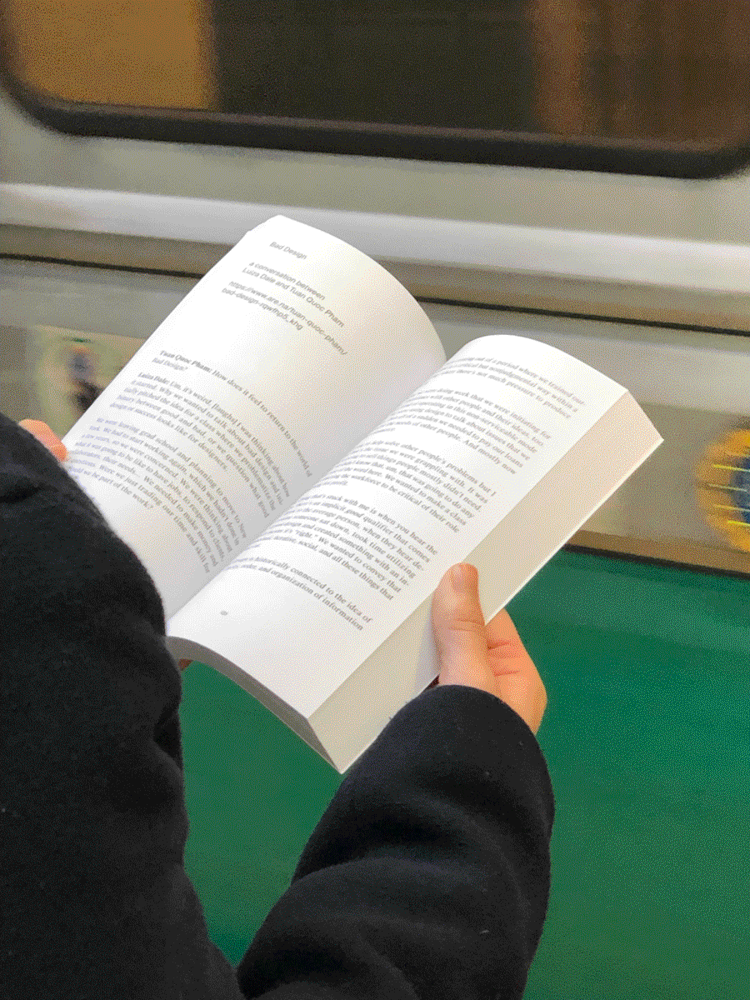
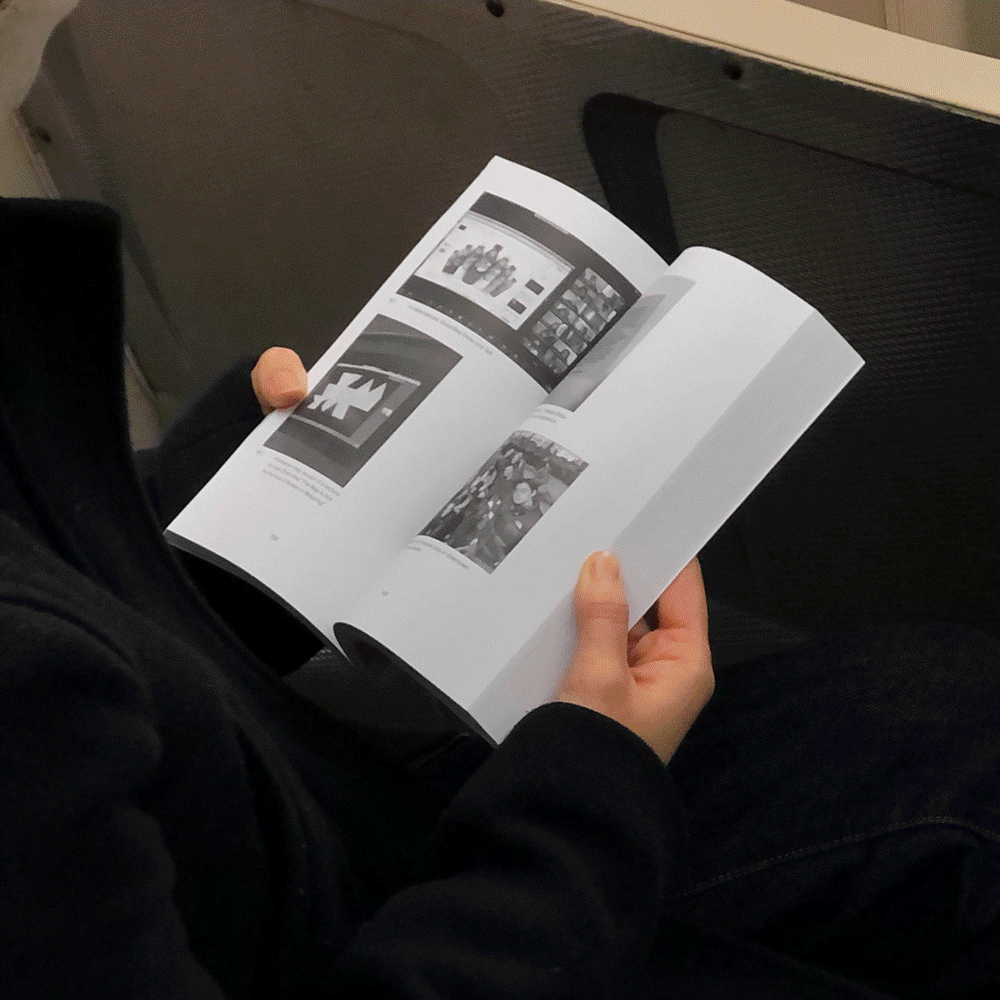
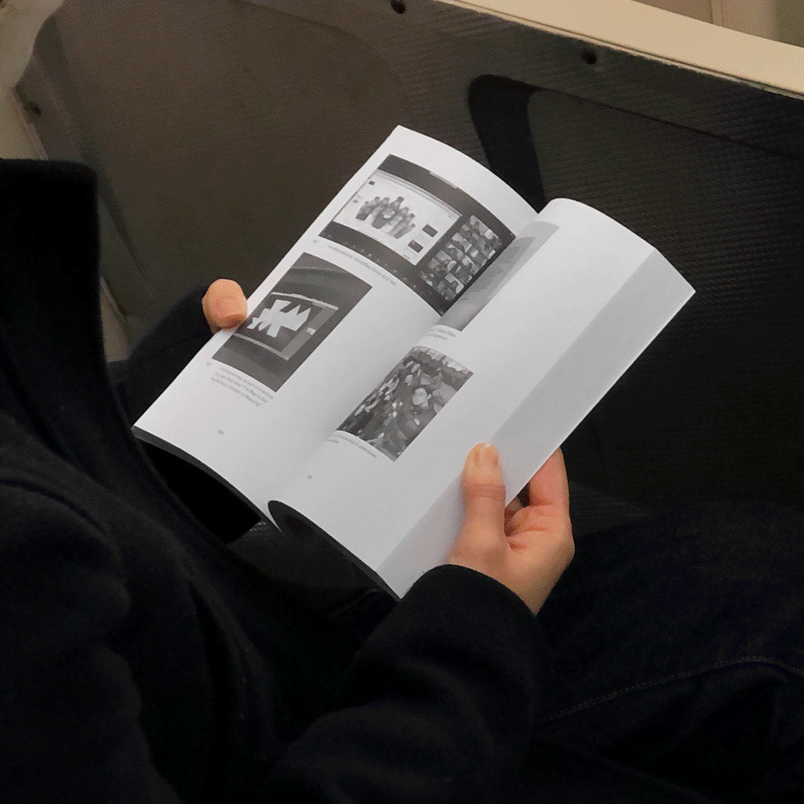

Are.na Annual

* 2023, on service
 

about this here website...
Every few weeks I confront the urge to redesign my website. Every so often I give in to it. Part of it is because I’m so shamelessly online and have spread myself so thin (online persona wise) that attempts to unify my various selves end in long bouts of introspection, often to little avail.
I’ve been asking around, how do you go about distinguishing the personal v. the professional? and as of early/mid-March in 2023, I don’t think I need to make that distinction so clear....
Ideally the professional work I do generally aligns with my personal aspirations, and what I learn during my adventures into interaction / digital / graphic design and creative coding can then inform my personal hobbies... a nice cycle.
Though I don’t have much of a manifesto, I know that I am dedicated to silly and serious things. That I like questions and that I find a lot of potential in the overlooked spaces online. I know that margins, annotation, commonplace books, and this idea of “how can we become more ourselves” are important to me. Overall I’d say I am invested in conversations, tools, and more that offer us the space (and/or time) to be curious, to feel a certain wonder and joy, to work towards a common cause.
As for the stuff that’s on this site... As a 2022 grad many of my projects were fun formal/material experiments that I think are best left in the academic setting. I’d like to gather here projects that more closely reflect my current interests and sketches, as well as those that I am confident are living their best lives out in the world.
Colophon... this website is set in Karrik by Jean-Baptiste Morizot and Lucas Le Bihan, from Velvetyne Type Foundry.
I learned about <summary> and <details> from this tweet and it made me love HTML all the more.
log...
- new quote/excerpt! previous quote: “all pursuits of knowledge are exercises in longing”. 3/11/23.
- Redesigned yet again !? 3/10/23.
Continuing my cautious wading into internet chum, I have ambitious goals to share more research into this and related themes in April. Most of that planning will be in this note-gathering place.
As I work full-time in digital (interaction-adjacent) design, I would like to more systematically learn about user experience research + testing and accessibility in new media and experience design. I’d love to chat if you have experience/interest in this sphere! Otherwise also very much down to gush about all things design and computational art.
Yours truly,